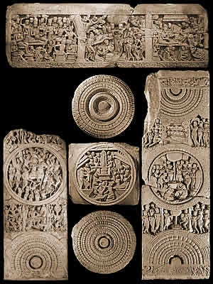

Inner railing
Around the outer limits of the Stupa was a tall railing made of
limestone
. The railing marked the boundaries of the Stupa.
Click on the section of railing to explore

See the outer railing
back to the Stupa...